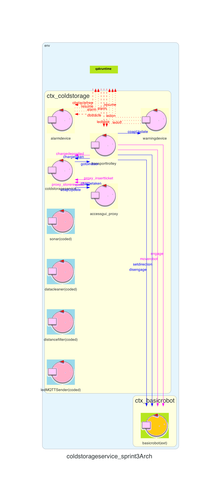

Introduction
Lo Sprin43 è il naturale proseguo di quanto realizzato nello Sprint2.Requirements
Descrizione del
TemaFinale23
Goals Sprint 4
Si possono definire in seguito i goal relativi allo Sprint4:
- Identificare ed analizzare tutti i problemi relativi ai requisiti che coinvolgono la ServiceStatusGUI
- Integrare al sistema realizzato nello Sprint3 la ServiceStatusGUI
- Realizzare l'interfaccia grafica
- Testare il sistema
Requirement analysis
Chiarimenti del committente
L'interazione con il committente ha permesso di chiarire alcuni aspetti del progetto:Sistema
Questo ultimo Sprint ha come prodotto finale il sistema identificato dallo Sprint0. Nella seguente foto vengono riportati i macro-componenti del sistema complessivo::
Analisi
Dai requisiti espressi nel Tema Finale e dalle analisi già effettuate negli Sprint0, Sprint1, Sprint2 e Sprint3, in questo Sprint occorre analizzare la ServiceStatusGUI che è definita come interfaccia utile per mostrare all'addetto della supervisione, detto Service Manager, i dati utili per monitorare il sistema.Ai fini di sorveglianza si ritengono valide mostrare le seguenti informazioni:
- Peso fisico corrente effettivamente presente nella ColdRoom
- Peso prenotato ma non ancora presente nella ColdRoom
- La posizione del TransportTrolley sulla mappa
- Lo stato del TransportTrolley
- Numero di richieste di store rifiutate dall'inizio del sistema
Analisi del Problema
Interazioni
Data la sua natura, tutte le interazioni hanno come destinatario ServiceStatusGUI. In particolare i seguenti messaggi sono prodotti grazie al pattern Observer, per questo motivo possiedono tutti lo stesso nome "coapUpdate":| Messaggio | Mittente | Destinatario | Semantica messaggio | Descrizione |
|---|---|---|---|---|
| coapUpdate | transportrolley | ServiceStatusGUI | Dispatch | Informa la ServiceStatusGUI dello stato ........... |
Architettura logica
Codice QAK per la modellazione del sistema: SonarLed.qak
Il sistema da noi modellato presenta la seguente architettura logica:

Test plans
| Test | Entità coinvolte | Scenario | Comportamento atteso |
|---|---|---|---|
| testObstacle | alarm device | Il TransportTrolley sta eseguendo le sue mansioni ed all'improvviso il sonar rileva una distanza minore di DLIMT | Un evento alarm viene scatenato da alarmdevice |
| testConsecutiveObstacleGreaterDLIMT | alarm device | Il TransportTrolley sta eseguendo le sue mansioni ed all'improvviso il sonar rileva una distanza minore di DLIMT e il transportrolley si ferma. Dopo un tempo pari ad 1/3 di MINT viene effettauta la resume, riattivando il transportrolley. Successivamente dopo MINT millisecondi dal precedente stop il sonar rileva di nuovo una distanza minore di DLIMT. | In entrambi gli stop vengono emessi gli eventi alarm. |
| testConsecutiveObstacleLowerDLIMT | alarm device | Il TransportTrolley sta eseguendo le sue mansioni ed all'improvviso il sonar rileva una distanza minore di DLIMT e il transportrolley si ferma. Dopo un tempo pari ad 1/3 di MINT viene effettauta la resume, riattivando il transportrolley. Successivamente entro MINT millisecondi dal precedente stop il sonar rileva di nuovo una distanza minore di DLIMT, ma immediatamente dopo ritorna a misurare una distanza maggiore di DLIMT. | Al primo stop viene emesso l'evento alarm, ma al secondo l'evento alarm non viene scatenato. |
Project
Siccome nell'analisi del problema si è utilizzato un simulatore del sonar per creare il QAK, il passo successivo è quello di integrarne uno fisico. Per fare ciò si adotta un broker gratuito e a disposizione di tutti come tcp://mqtt.eclipseprojects.io che permette l'invio e la ricezione di eventi tra dispositivi fisicamente non collegati ma connessi alla rete internet.Per comunicare dati utilizzando MQTT bisogna definire un topic che definisce il canale di utilizzo, utile per distinguere categorie di eventi che vogliamo raggruppare. Nel nostro caso si è adottato unibo/sonar/events come topic per comunicare i dati dal Raspberry al Servizio. Prima di essere considerati da ColdStorageService, vengono filtrati da:
- SonarMQTTReceiver: si impegna a ricevere i dati "grezzi" del sonar tramite MQTT e poi propaga l'evento all'interno del contesto ctx_coldstorage
- DataCleaner: pulisce i valori scartando le misurazioni che non sono comprese in un range che va da 2 a 150 cm
- DistanceFilter: riceve i dati puliti dal DataCleaner e invia un evento obstacle o obstaclefree qualora le misurazioni rispettivamente siano inferiori di DLIMT oppure maggiori
Anche per comunicare con il led si utilizza MQTT, mandando un messaggio con l'ausilio dell'attore LedMQTTSender ed utilizzando unibo/led/events come topic.
Per la fase di prototipazione il sonar e led saranno collegati ad un Raspberry tramite dei cavetti jumper femmina-femmina.
Il software lato Raspberry sarà organizzato nella seguente maniera:
- Un programma python che si occupa di utilizzare il sonar per estrapolare le distanze misurate
- Un programma python che cattura tali dati da standard input e li inoltra al broker nel corretto topic
- Un programma python che riceve dal broker i comandi e li inoltra su standard input
- Un programma python che legge da standard input e comanda il led
I file che definiscono il software necessario per il Raspberry sono: sonar.py, controllerMQTT.py, LedDevice.py, mqttReceiver.py
La scelta di Python è motivata dal fatto che è un linguaggio ideale per la prototipazione: rapido, con molte librerie di supporto e ben documentato. Successivamente se si desiderano performace migliori si può pensare di ottimizzare scrivendo codice di più basso livello.
I pin del Raspberry coinvolti sono:
- GPIO 4: pin TRIG sonar
- GPIO 27: pin ECHO sonar
- GPIO 25: pin led
Conclusioni
Gli output dello sprint3 sono:
- Warning Device e relativi attori e file python
- Alarm Device e relativi attori e file python
By
Tassinari Gabriele, email: gabriele.tassinari2@studio.unibo.it
Baraldi Leonardo, email: leonardo.baraldi@studio.unibo.it
Koss Krystian, email: krystian.koss@studio.unibo.it


GIT repo: https://github.com/4utotune/ColdStorageService/
Tassinari Gabriele, email: gabriele.tassinari2@studio.unibo.it
Baraldi Leonardo, email: leonardo.baraldi@studio.unibo.it
Koss Krystian, email: krystian.koss@studio.unibo.it
GIT repo: https://github.com/4utotune/ColdStorageService/